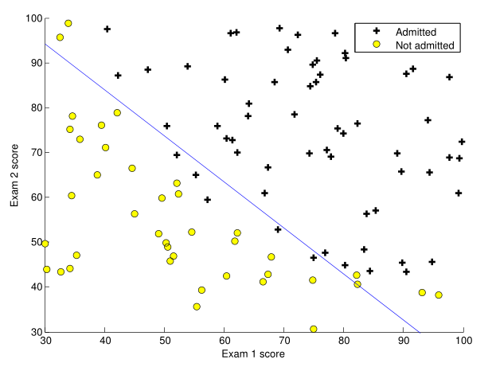
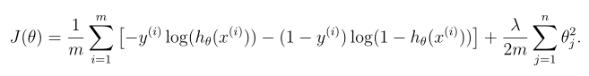
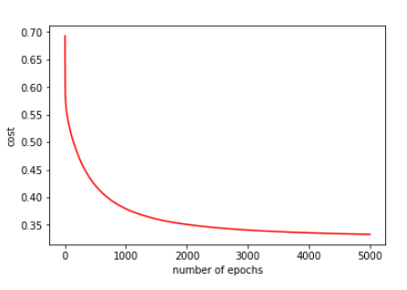

This post is divided into a few sections and if you are here for a particular section, please select a link from below to go there.
For understanding Logisitic Regression, we'll keep up with our motivating example of housing prices prediction. In Linear Regression we had to predict the price of a house given the its size. It means, that our 'value to be predicted' i.e. 'house price' can take infinite values depending on the size of house we provide.
Logistic Regression differs from Linear Regression in this regard. In Logisitic Regression instead of predicting values from an Infinite Set, we choose values from a well defined set. This set generally has a only a few classes. This property of Logistic Regression makes it well suitable for Classification tasks.
In Binary Logistic Regression, we try to classify our data into two classes. An example for binary logistic regression can be any classification task like, 'to tell if a given image is of a cat or a dog' or 'to tell if a given email is a spam or not'.
Where as in Multinomial Logistic Regression we try to classify our data into more than two features, generally. A popular example will be Handwritten Digit Classification using MNIST dataset. In such a situation we'll want to classify a digit into ten possible classes i.e. digits from 0 to 9.
You will need to download this dataset, if you wish to follow along. The dataset describes the scores of two tests taken by a batch of students and if they pass or fail. 0 denotes 'student not admitted' and 1 denotes 'student admitted'. Here is a snapshot of our data.
Now what we want to do is train our model to predict if a student is 'admitted' or 'not admitted' given their scores in two tests. So here is a plot of our data.
Now our aim is to find a simple decison boundary that will classify our data into two classes. This will complete our model and we'll be able to give a prediction for new cases. Our decision boundary should look something like this.

In this case this linear decision boundary will more or less do the job for us. Achieving this decision boundary is the main aim of our algorithm.
Let's overview implementation of Logistic Regression. Because we need to classify our data into classes if (if our prediction is 1 or 0), we'll use an activation function which will try to classify our predictions into one of these two classes. The kind of activation we'll use here is called Sigmoid Function. It's most of the time the best choice to use as an activation function for logistic regression. Here's our sigmoid function.
We'll calculate our hypothesis just like in linear regression but this time we will calculate sigmoid() of our predictions. Our prediction matrix will be h(x).
Now let's look at the cost function we'll use for our logistic regression model.
This will be our gradient function.
Now let's look at the code for Binary Logistic Regression model for dataset described above.
In the above code we imported all the necessary libraries and stored data from CSV file into a dataframe using pandas and then stored the features and labels into dataframes X and Y respectively.
In above code we mean normalized our data. We also found out the values of m and n i.e. number of examples and number of features respectively. We then stored our data from dataframes into numpy matrices x and y.
In this step we made necessary arrangements to plot the below graph through matplotlib.pyplot.
Above code will append a column of ones to our feature matrix. It will also intialize a theta vector of shape (n+1,1).
In the above code we defined a sigmoid function and the cost function for logistic regression. We'll use initial value of theta vector and calculate initial cost and initial gradient.
This code will initialize alpha and epochs variable and also the costHistory list which will be used to plot the 'cost vs epochs' graph later. Then we'll implement the gradient descent loop as we described in the mathematical relation above.
Now we have or final predictions vector. We have our trained parameters. The first part of the code will also plot our 'cost vs epochs' graph. It will look something like this.
Plotting The decision boundary.
Okay, enough about Simple Logistic Regression. Now Let's introduce regularization in our model. Say we have a dataset like the visulization shown below.

Can we use a linear decision boundary to classify this data? Clearly, we can't. So to make this happen we'll use feature mapping in order to produce polynomial features which may probably produce a decision boundary with which we'll be able to classify our data. Like this maybe.

Now when we generate polynomial features of high degrees, sometimes we obtain decesion boundary likes these.
Now this fit looks really good. But can it make good predictions? Actually it can't. The higher order polynomial features we generated, found a super-awesome decision boundary which fits the training data amazingly well but its not able to generalize it's predictions. And hence it won't do so good on the test set. It's like a kid who cramped all the math problems only to discover that he cannot do any problems which even slightly diifer from the problems he mugged. And this is where regularization comes to rescue.

This is our regularized logistic cost function. This is exactly the same as simple logistic cost function just it has a regularization term added to it.

This is our regularized gradient. Note we do not regularize our theta_0 term.
Let's quickly look at the code for the Regularized Logistic Regression Implementation.
The code above is same as the code in Simple Logistic Regression. Now the main difference occurs when we implement costFunction() for regualrized logistic regression.
Our cost function is also same as above just that it has a regularization term added to it and we have made sure to not regularize the theta_0 term.
This part of our code deals with generation of polynomial features. If you want to know more about generation of polynmial features, I suggest you should read my post on Polynomial Regression.
In this part we initialize our hyperparameters (learning_rate,epochs,lambda) and implement the gradient descent for loop. Finally, we also implement a 'cost VS epochs' plot.
